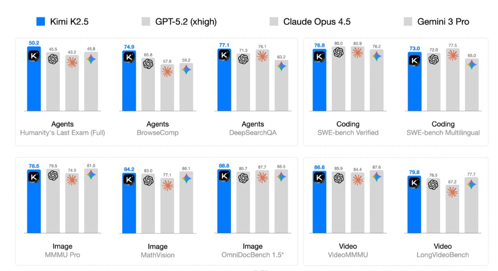
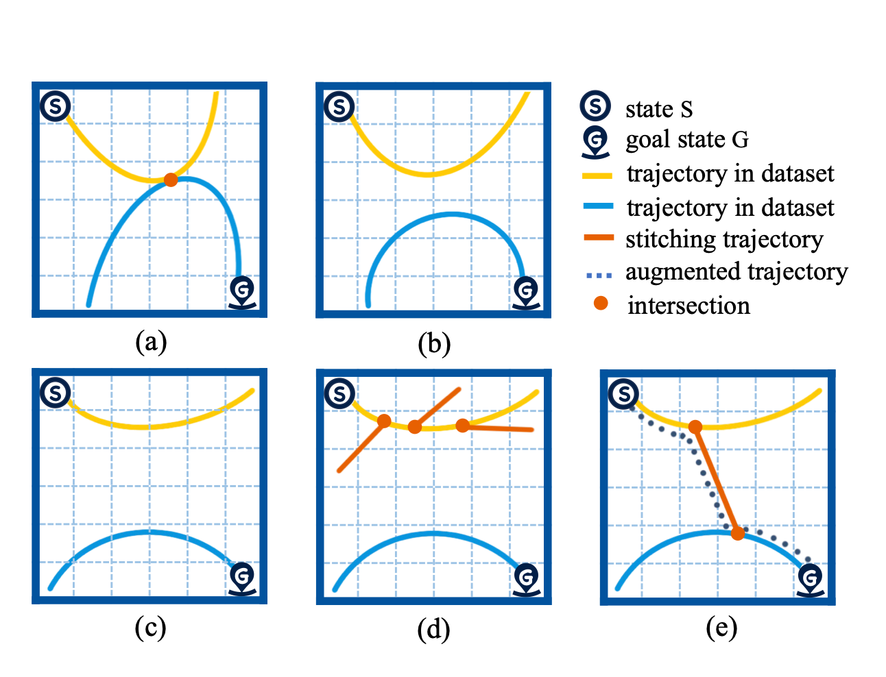
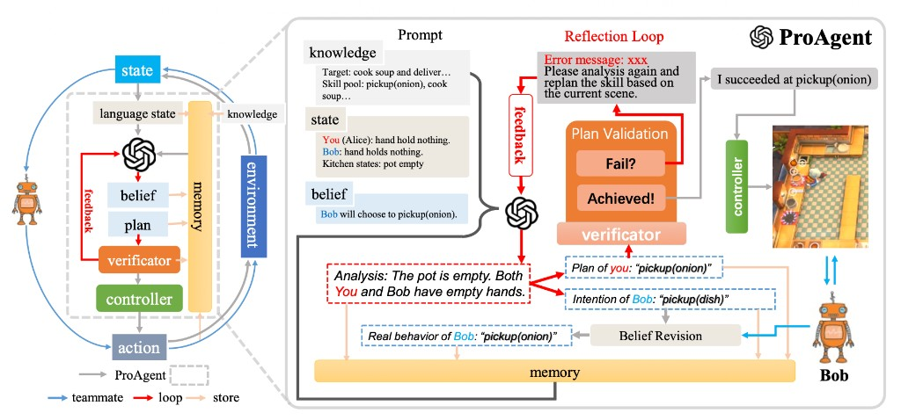

Guanghe Li | 李光赫
I am a first-year Computer Science Ph.D. student at the College of Artificial Intelligence, Tsinghua University , supervised by Prof. Yang Gao . Before joining THU, I received my B.S. in Computer Science from Jilin University in 2025.
My research focuses on reinforcement learning, embodied AI, and self-supervised learning. If you are interested in my work, please reach out by email.
Email /
Google Scholar /
Github
News
2026.03 – Present : Internship at 千寻智能 (Spirit AI).2025.07 – 2026.02 : Internship at Moonshot AI (Kimi ).2025.05 : We release EasyInsert, a highly generalizable robotic insertion framework.2024.09 : Admitted to Tsinghua University, College of AI.2024.05 : Our paper “DiffStitch” is accepted at ICML 2024.

Kimi K2.5: Visual Agentic Intelligence
Kimi Team et al. Guanghe Li contributed as one of many authors (full list on arXiv).
Technical report arXiv
EasyInsert: A Data-Efficient and Generalizable Insertion Policy
Guanghe Li ,
Junming Zhao,
Shengjie Wang,
Yang Gao
In submission Project Page
A framework for data-efficient, generalizable robotic insertion policies.

DiffStitch: Boosting Offline Reinforcement Learning with Diffusion-Based Trajectory Stitching
Guanghe Li ,
Yixiang Shan,
Zhengbang Zhu,
Ting Long,
Weinan Zhang
ICML Paper
Improves offline RL by stitching trajectories with diffusion models.

ProAgent: Building Proactive Cooperative Agents with Large Language Models
Guanghe Li ,
Yihang Sun, Cheng Zhang, Zhaowei Zhang, Anji Liu, Song-Chun Zhu, Xiaojun Chang, Junge Zhang, Feng Yin, Yitao Liang, Yaodong Yang
AAAI Oral Paper
Proactive multi-agent cooperation using large language models.
Academic Service
CoRL : Reviewer (2025, 2026)
Honors and Awards
2024 : Xiaomi Scholarship (小米特等奖学金), ¥20,0002024 : Jilin University Outstanding Award for Scientific Research, ¥50,0002023 : National Scholarship, ¥8,0002022 : ACM-ICPC Asia Shenyang Regional, Gold Medal2020 : National Olympiad in Informatics (NOI2019), Bronze Medal
Internship Experience
2026.03 – Present : 千寻智能 (Spirit AI), intern.
2025.07 – 2026.02 : Moonshot AI (Kimi ), intern.
Tsinghua University , Beijing, China
Ph.D. in Computer Science
Yang Gao
Jilin University , Changchun, China
B.S. in Computer Science
Template from Jon Barron .
{kind=link}